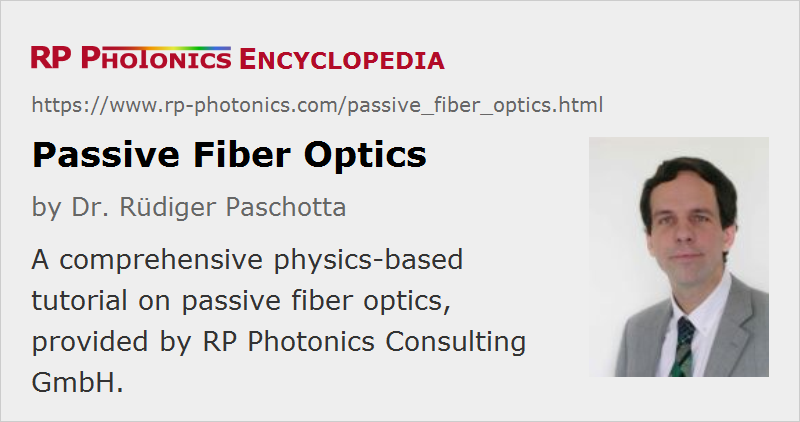

Passive Fiber Optics
Author: Dr. Paschotta
This tutorial can serve as an introduction to fiber optics, i.e., for learning basic of fiber optics, but it also helps to improve the understanding for people who already have a substantial experience with optical fibers. The focus is on the physics of wave propagation and its technical consequences. We do not go into mathematical details, but rather try to create an intuitive understanding of the operation principles – often by demonstrating certain effects with numerical simulations. The simulation and design software RP Fiber Power of RP Photonics is an excellent tool for such purposes and has been extensively used for this tutorial.
This resource focuses on passive fibers – in contrast to active fibers, having an additional laser-active dopant (see our tutorial on fiber amplifiers). Passive fiber optics have a very wide range of applications, including areas like optical fiber communications (sending data through fiber-optic links and networks), illumination (fiber-optic lighting) and fiber-optic sensors. The core component is always the optical fiber, which may be packaged into a fiber-optic cable, or sometimes a fiber bundle. Fiber patch cables are often equipped with fiber connectors, and there are various other kinds of fiber tools and accessories such as strippers, cleavers and splicers.
Click on the headings to get to the following parts of the tutorial:
| 1 |
Part 1: Guiding Light in a Glass FiberHow can light be guided in a fiber, using some refractive index contrast? How can we describe this in a ray or wave picture? |
| 2 |
Part 2: Fiber Modes
What are fiber modes? What determines the number of guided modes? What are core and cladding modes, and what are their basic properties? How and when can we calculate light propagation based on modes, and what are the limitations of the mode decomposition technique? |
| 3 |
Part 3: Single-mode FibersWhat is the criterion for single-mode guidance? How does light in a single-mode fiber behave? How does the mode size depend on the core size and numerical aperture? How can we calculate the efficiency of launching light into a single-mode fiber? |
| 4 |
Part 4: Multimode Fibers
What determines the number of guided modes of a multimode fiber? What are step-index and graded-index fibers, and how do they differ in terms of intermodal dispersion? Why does the output beam profile sensitively depend on launch conditions and the state of the fiber? Can we use a multimode fiber for single-mode transmission? |
| 5 |
Part 5: Fiber EndsHow to strip, cleave and polish fiber ends? How large does the cleave angle have to be in order to suppress back-reflections? |
| 6 |
Part 6: Fiber JointsHow can fibers be spliced together or mated with connectors? What coupling losses arise from non-perfect alignment? |
| 7 |
Part 7: Propagation LossesWhat are the origins of propagation losses (attenuation) in optical fibers? Where is the loss optimum of silica fibers? Why do single-mode fibers typically exhibit lower losses? What are bend losses, and which design details determine the critical bend radius? |
| 8 |
Part 8: Fiber Couplers and SplittersHow does a directional fiber coupler work? Which parameters are most essential for its performance? What are the typical applications of fiber couplers and splitters? Why does the splitting ratio strongly depend on the wavelength? In which wavelength range does such a coupler work? |
| 9 |
Part 9: Polarization Issues
What are the origins of birefringence in fibers? How do fiber polarization controllers and polarization-maintaining fibers work? How to make polarization-insensitive fiber devices? |
| 10 |
Part 10: Chromatic Dispersion of FibersWhat is chromatic dispersion? How can we understand waveguide dispersion? How does the dispersion change near the cut-off of a fiber mode? What is intermodal dispersion, and how does chromatic dispersion affect fiber-optic links? |
| 11 |
Part 11: Nonlinearities of Fibers
What kind of nonlinear effects occur in fibers? Why can nonlinear self-focusing not be avoided by larger mode areas, in contrast to self-phase modulation, stimulated Brillouin and Raman scattering, and other nonlinear effects? What happens to higher-order modes under conditions of very high optical intensities? |
| 12 |
Part 12: Ultrashort Pulses and Signals in FibersHow do dispersive and nonlinear effects work together for ultrashort pulses in fibers? How can a fiber temporally separate different spatial components of a pulsed input? How can soliton pulses be formed? What is supercontinuum generation? |
| 13 |
Part 13: Fiber Accessories and ToolsWhat types of tools can be used for stripping, cleaving and splicing of fibers? How to inspect fiber ends? What can be used to connectorize fibers, or to collimate their output? |
By the way, on this website we have a lot of other materials on fiber optics – not only the other tutorials, but also a lot of encyclopedia articles on fiber optics and various articles of the Photonics Spotlight (for example, those of 2016-09-12, 2016-08-11, 2016-05-12, 2015-03-11, 2014-07-28, 2013-07-08 and 2011-02-10).
Questions and Comments from Users
Here you can submit questions and comments. As far as they get accepted by the author, they will appear above this paragraph together with the author’s answer. The author will decide on acceptance based on certain criteria. Essentially, the issue must be of sufficiently broad interest.
Please do not enter personal data here; we would otherwise delete it soon. (See also our privacy declaration.) If you wish to receive personal feedback or consultancy from the author, please contact him e.g. via e-mail.
By submitting the information, you give your consent to the potential publication of your inputs on our website according to our rules. (If you later retract your consent, we will delete those inputs.) As your inputs are first reviewed by the author, they may be published with some delay.
|  |
If you like this article, share it with your friends and colleagues, e.g. via social media:
These sharing buttons are implemented in a privacy-friendly way!